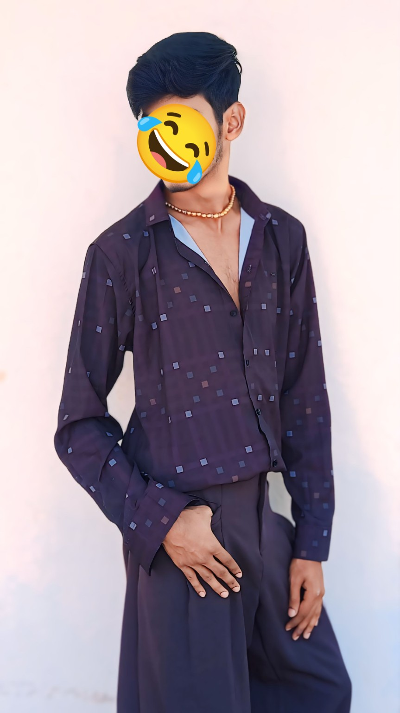
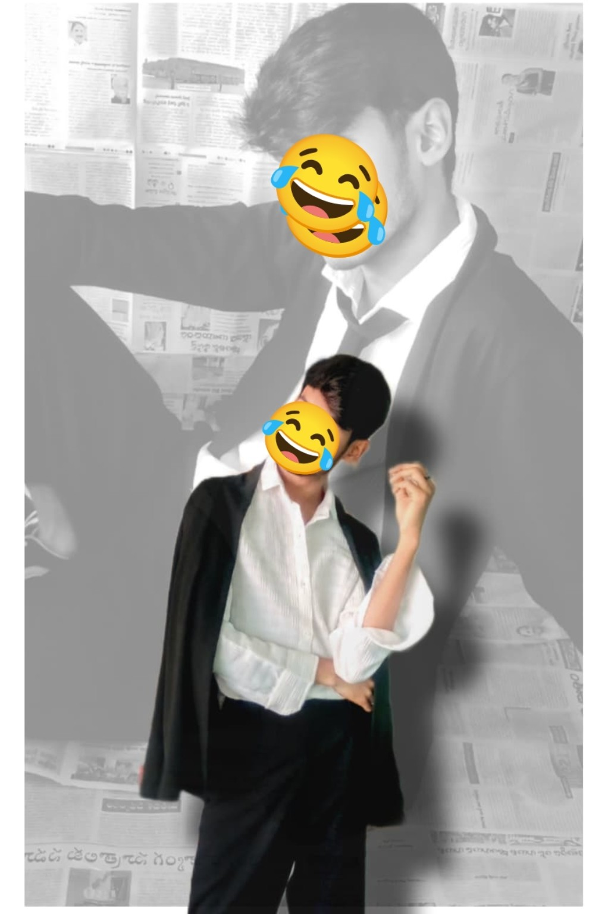

📸 CURATED PHOTO-POSE ALBUM
Find your next pose.
A colorful, album-style collection of portrait ideas. Tap any photo to explore the pose, style, composition and practical shooting tips.
22+ pose ideas


The Pose Album
Browse by mood and setting. Every card opens into a detailed pose guide.
Make the pose work.
Small changes in body angle, hands, light and camera height can completely change the final photograph.
📐 Composition
1
Angle the body
Turn the shoulders slightly instead of standing completely square.
Turn the shoulders slightly instead of standing completely square.
2
Create depth
Bring a knee, hand or prop closer to the lens for stronger perspective.
Bring a knee, hand or prop closer to the lens for stronger perspective.
3
Leave breathing room
Use negative space intentionally, especially for vertical portraits.
Use negative space intentionally, especially for vertical portraits.
💡 Styling & Light
4
Use the environment
Windows, walls, chairs, vehicles and outdoor scenery can become natural props.
Windows, walls, chairs, vehicles and outdoor scenery can become natural props.
5
Match the mood
Soft light suits casual portraits; harder light can create graphic editorial shadows.
Soft light suits casual portraits; harder light can create graphic editorial shadows.
6
Keep movement natural
Touching hair, adjusting a sleeve or shifting weight prevents stiff poses.
Touching hair, adjusting a sleeve or shifting weight prevents stiff poses.
Have a pose to share?
Help grow the album.
Use the button below to send your photo or pose suggestion. Your email app will open with the submission address already filled in. Please attach the photo yourself and include the pose name or a short description.
iamtejuai@gmail.com